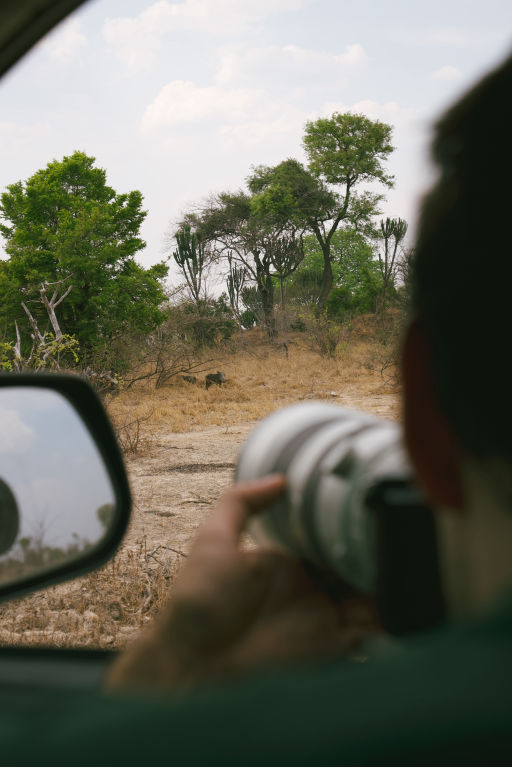

These days, there’s so much noise online that it’s tough for nonprofits, social enterprises, and eco brands to get their important stories heard. That’s where video for social impact really comes in. Video storytelling is one of the best ways to connect with people on a real, emotional level and inspire them to take action.
At Munjiri Videos, we’ve worked with purpose driven organizations to create videos that show what they care about and help their message reach more people. In this guide, we’ll share simple tips, real stories from our work, and some insider know-how to help you tell your story in a way that really sticks with your audience.
When it comes to social impact, facts and numbers definitely matter, but on their own, they don’t usually move people. What really connects is a story that feels real and honest. Video lets you show those little moments that words can’t quite capture: a mother’s smile, a craftsman’s hands at work, a community coming together.
Take Ajiri Tea, for example, a women-led social enterprise in Kenya. Instead of trying to squeeze in too many messages into one video, about tea farmers, womens employment, orphan education, summer camp, award winning tea. We focused in on explaining simply what the brand does and how it connects to their customers. We highlighted the heart of their story in a simple, clear way, so viewers could understand and feel connected without getting lost in too many details. Later we worked on telling other stories in different videos.
Even experienced organizations sometimes struggle with their video strategy. Here are a few pitfalls we often see:
Too Many Ideas in One Video: Trying to cover every aspect of your work can dilute your message. Instead, focus on one clear story or transformation.
Over-Planning Without Room for Magic: While planning is essential, leaving space for spontaneous moments often creates the most genuine, memorable footage. It's good to have a balance.
Asking Too Many Questions: Again this goes back to too many ideas in one video, but also you want to flow with the conversation so it's basically keeping in mind the two things above when your doing an interview.
Not Considering the Viewer: Always think about who is watching your video and what will move them emotionally.
Not all editor videographers are created equal, so here’s what to look for when hiring:
Check Their Portfolio
Before anything else, take a look at their previous work. Do their past projects match the style and quality you’re looking for?
Assess Their Technical Skills
A great editor videographer should be proficient in industry-standard software like Adobe Premiere Pro, Final Cut Pro, or DaVinci Resolve. They should also have a good grasp of lighting, camera work, and sound design to ensure great video quality.
Look for Creativity & Storytelling Ability
Anyone can shoot a video, but only a skilled editor videographer can transform raw footage into a compelling story. Ask how they approach storytelling and pacing to keep audiences engaged.
Prioritize Professionalism & Communication
Clear communication is key to a successful project. Choose someone who listens to your vision, provides professional input, and meets deadlines.
Know What You Want – Be clear about your project’s goals, audience, and style.
Ask for Samples – Never hire blindly, always review past work.
Discuss Timelines & Revisions – Make sure they can meet your deadlines and clarify how many revisions are included.
Editing is where emotion is built, like in our African Bat Conservation piece.


What does an editor videographer do?
An editor videographer handles both video shooting and editing, ensuring a seamless process from concept to final production.
How do I choose the right editor videographer?
Look at their portfolio, assess their technical and storytelling skills.
How long does it take to edit a video?
Editing time varies depending on complexity, but a professional editor videographer usually takes between a few days to a few weeks per project.
What’s the difference between a videographer and an editor videographer?
A videographer focuses only on filming, while an editor videographer handles both filming and post-production editing.

What services does Munjiri Videos offer?
We provide videography and video editing, for brand videos, social media and more.
How can I book Munjiri Videos for my project?
You can contact us katy@munjiri.com to discuss your project needs and get a custom quote.
A great editor videographer can make your content more engaging and effective. Whether you’re looking for someone to create amazing marketing videos, capture events , or create compelling social media content. Take your time, do your research, and hire someone who really understands your ideas!
If you have any questions you can reach out at katy@munjiri.com

Brand Video Production
Social Media Video Production
Nature Video Production
Creative Video Productions
Charity Video Production
Drone Videographer
Event Video Production
Product Video Production
Travel Video Production
Learn Video Making
Video Storytelling
Video Making Tips
Video Marketing & Social Media Strategies
Nature Stories
Behind the Scenes
Client Stories
Locations & Travel
Location
Based in Portugal and South Africa, offering video production services worldwide.
Email: katy@munjiri.com
Get updates and free resources.